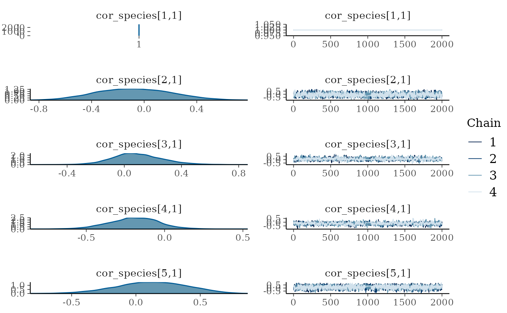
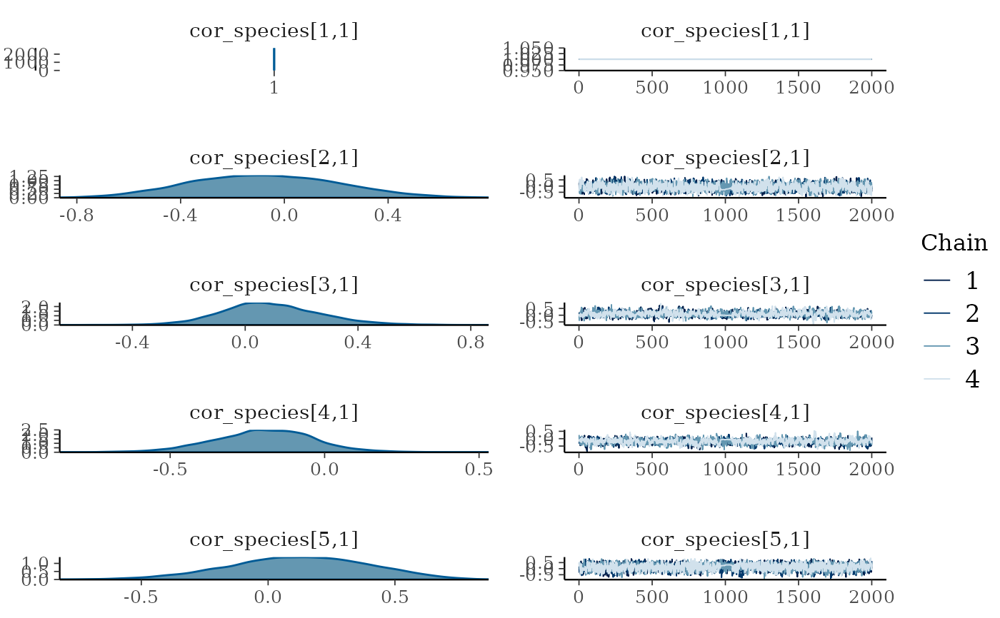

Plot the traceplots and density plots for parameters within a jsdmStanFit object
plot.jsdmStanFit.RdThis function takes parameters from the jsdmStanfit object and plots them using
the bayesplot::mcmc_combo()function from the bayesplot package.
Arguments
- x
The
jsdmStanFitmodel object- pars
The parameters to plot, by default a random sample of twenty of the parameters fit within the model
- combo
Which combination of plot types within
bayesplot::mcmc_combo()to use, by defaultc("dens", "trace")- N
The number of plots per page, default
5- ask
Whether to ask before plotting a new page, default
TRUE- inc_warmup
Whether to include the warmup period in the plots, by default
FALSE- include
Whether to include or exclude the parameters specified by pars, by default
TRUE(i.e. include)- sample_n
If
pars = NULLthen the number of random non-sigma parameters to include (details in description)- regexp
If pars should be treated as a regular expression for matching to parnames, by default
FALSE- plot
Whether to plot the plots, default
TRUE- newpage
Whether the first plot should be plotted on a new page, by default
TRUE- ...
Arguments passed to
bayesplot::mcmc_combo()
Details
This acts as an interface to the bayesplot::mcmc_combo()
function, with the default being to plot a density plot and a trace plot for
each parameter specified, although this can be changed by setting the
combo argument. These jSDM models have a lot of parameters so selecting a
subset is recommended. If pars is set to NULL (the default) all
parameters with either sigma or kappa in their name will be plotted along with a
random selection of the other parameters (total number of other parameters set
by sample_n). To see the name of the parameters within the model use
get_parnames() - and if you want to plot all parameters (there will be
hundreds in any reasonably sized model) set pars = get_parnames(x).
See also
mcmc_plot.jsdmStanFit() for more plotting options.
Examples
# \donttest{
# First simulate data and get model fit:
mglmm_data <- mglmm_sim_data(
N = 100, S = 10, K = 3,
family = "gaussian"
)
mglmm_fit <- stan_mglmm(
Y = mglmm_data$Y, X = mglmm_data$X,
family = "gaussian"
)
#>
#> SAMPLING FOR MODEL 'anon_model' NOW (CHAIN 1).
#> Chain 1:
#> Chain 1: Gradient evaluation took 0.000344 seconds
#> Chain 1: 1000 transitions using 10 leapfrog steps per transition would take 3.44 seconds.
#> Chain 1: Adjust your expectations accordingly!
#> Chain 1:
#> Chain 1:
#> Chain 1: Iteration: 1 / 4000 [ 0%] (Warmup)
#> Chain 1: Iteration: 400 / 4000 [ 10%] (Warmup)
#> Chain 1: Iteration: 800 / 4000 [ 20%] (Warmup)
#> Chain 1: Iteration: 1200 / 4000 [ 30%] (Warmup)
#> Chain 1: Iteration: 1600 / 4000 [ 40%] (Warmup)
#> Chain 1: Iteration: 2000 / 4000 [ 50%] (Warmup)
#> Chain 1: Iteration: 2001 / 4000 [ 50%] (Sampling)
#> Chain 1: Iteration: 2400 / 4000 [ 60%] (Sampling)
#> Chain 1: Iteration: 2800 / 4000 [ 70%] (Sampling)
#> Chain 1: Iteration: 3200 / 4000 [ 80%] (Sampling)
#> Chain 1: Iteration: 3600 / 4000 [ 90%] (Sampling)
#> Chain 1: Iteration: 4000 / 4000 [100%] (Sampling)
#> Chain 1:
#> Chain 1: Elapsed Time: 188.641 seconds (Warm-up)
#> Chain 1: 93.315 seconds (Sampling)
#> Chain 1: 281.956 seconds (Total)
#> Chain 1:
#>
#> SAMPLING FOR MODEL 'anon_model' NOW (CHAIN 2).
#> Chain 2:
#> Chain 2: Gradient evaluation took 0.000242 seconds
#> Chain 2: 1000 transitions using 10 leapfrog steps per transition would take 2.42 seconds.
#> Chain 2: Adjust your expectations accordingly!
#> Chain 2:
#> Chain 2:
#> Chain 2: Iteration: 1 / 4000 [ 0%] (Warmup)
#> Chain 2: Iteration: 400 / 4000 [ 10%] (Warmup)
#> Chain 2: Iteration: 800 / 4000 [ 20%] (Warmup)
#> Chain 2: Iteration: 1200 / 4000 [ 30%] (Warmup)
#> Chain 2: Iteration: 1600 / 4000 [ 40%] (Warmup)
#> Chain 2: Iteration: 2000 / 4000 [ 50%] (Warmup)
#> Chain 2: Iteration: 2001 / 4000 [ 50%] (Sampling)
#> Chain 2: Iteration: 2400 / 4000 [ 60%] (Sampling)
#> Chain 2: Iteration: 2800 / 4000 [ 70%] (Sampling)
#> Chain 2: Iteration: 3200 / 4000 [ 80%] (Sampling)
#> Chain 2: Iteration: 3600 / 4000 [ 90%] (Sampling)
#> Chain 2: Iteration: 4000 / 4000 [100%] (Sampling)
#> Chain 2:
#> Chain 2: Elapsed Time: 179.97 seconds (Warm-up)
#> Chain 2: 377.218 seconds (Sampling)
#> Chain 2: 557.188 seconds (Total)
#> Chain 2:
#>
#> SAMPLING FOR MODEL 'anon_model' NOW (CHAIN 3).
#> Chain 3:
#> Chain 3: Gradient evaluation took 0.000221 seconds
#> Chain 3: 1000 transitions using 10 leapfrog steps per transition would take 2.21 seconds.
#> Chain 3: Adjust your expectations accordingly!
#> Chain 3:
#> Chain 3:
#> Chain 3: Iteration: 1 / 4000 [ 0%] (Warmup)
#> Chain 3: Iteration: 400 / 4000 [ 10%] (Warmup)
#> Chain 3: Iteration: 800 / 4000 [ 20%] (Warmup)
#> Chain 3: Iteration: 1200 / 4000 [ 30%] (Warmup)
#> Chain 3: Iteration: 1600 / 4000 [ 40%] (Warmup)
#> Chain 3: Iteration: 2000 / 4000 [ 50%] (Warmup)
#> Chain 3: Iteration: 2001 / 4000 [ 50%] (Sampling)
#> Chain 3: Iteration: 2400 / 4000 [ 60%] (Sampling)
#> Chain 3: Iteration: 2800 / 4000 [ 70%] (Sampling)
#> Chain 3: Iteration: 3200 / 4000 [ 80%] (Sampling)
#> Chain 3: Iteration: 3600 / 4000 [ 90%] (Sampling)
#> Chain 3: Iteration: 4000 / 4000 [100%] (Sampling)
#> Chain 3:
#> Chain 3: Elapsed Time: 136.549 seconds (Warm-up)
#> Chain 3: 374.708 seconds (Sampling)
#> Chain 3: 511.257 seconds (Total)
#> Chain 3:
#>
#> SAMPLING FOR MODEL 'anon_model' NOW (CHAIN 4).
#> Chain 4:
#> Chain 4: Gradient evaluation took 0.000235 seconds
#> Chain 4: 1000 transitions using 10 leapfrog steps per transition would take 2.35 seconds.
#> Chain 4: Adjust your expectations accordingly!
#> Chain 4:
#> Chain 4:
#> Chain 4: Iteration: 1 / 4000 [ 0%] (Warmup)
#> Chain 4: Iteration: 400 / 4000 [ 10%] (Warmup)
#> Chain 4: Iteration: 800 / 4000 [ 20%] (Warmup)
#> Chain 4: Iteration: 1200 / 4000 [ 30%] (Warmup)
#> Chain 4: Iteration: 1600 / 4000 [ 40%] (Warmup)
#> Chain 4: Iteration: 2000 / 4000 [ 50%] (Warmup)
#> Chain 4: Iteration: 2001 / 4000 [ 50%] (Sampling)
#> Chain 4: Iteration: 2400 / 4000 [ 60%] (Sampling)
#> Chain 4: Iteration: 2800 / 4000 [ 70%] (Sampling)
#> Chain 4: Iteration: 3200 / 4000 [ 80%] (Sampling)
#> Chain 4: Iteration: 3600 / 4000 [ 90%] (Sampling)
#> Chain 4: Iteration: 4000 / 4000 [100%] (Sampling)
#> Chain 4:
#> Chain 4: Elapsed Time: 105.892 seconds (Warm-up)
#> Chain 4: 90.765 seconds (Sampling)
#> Chain 4: 196.657 seconds (Total)
#> Chain 4:
#> Warning: There were 149 divergent transitions after warmup. See
#> https://mc-stan.org/misc/warnings.html#divergent-transitions-after-warmup
#> to find out why this is a problem and how to eliminate them.
#> Warning: There were 3993 transitions after warmup that exceeded the maximum treedepth. Increase max_treedepth above 10. See
#> https://mc-stan.org/misc/warnings.html#maximum-treedepth-exceeded
#> Warning: There were 4 chains where the estimated Bayesian Fraction of Missing Information was low. See
#> https://mc-stan.org/misc/warnings.html#bfmi-low
#> Warning: Examine the pairs() plot to diagnose sampling problems
#> Warning: The largest R-hat is NA, indicating chains have not mixed.
#> Running the chains for more iterations may help. See
#> https://mc-stan.org/misc/warnings.html#r-hat
#> Warning: Bulk Effective Samples Size (ESS) is too low, indicating posterior means and medians may be unreliable.
#> Running the chains for more iterations may help. See
#> https://mc-stan.org/misc/warnings.html#bulk-ess
#> Warning: Tail Effective Samples Size (ESS) is too low, indicating posterior variances and tail quantiles may be unreliable.
#> Running the chains for more iterations may help. See
#> https://mc-stan.org/misc/warnings.html#tail-ess
# The default plot:
plot(mglmm_fit)

 # Plotting specifically the cor_species parameters:
plot(mglmm_fit, pars = "cor_species", regexp = TRUE)

#> Warning: collapsing to unique 'x' values
#> Warning: collapsing to unique 'x' values
#> Warning: collapsing to unique 'x' values
#> Warning: collapsing to unique 'x' values
#> Warning: collapsing to unique 'x' values
# Plotting specifically the cor_species parameters:
plot(mglmm_fit, pars = "cor_species", regexp = TRUE)

#> Warning: collapsing to unique 'x' values
#> Warning: collapsing to unique 'x' values
#> Warning: collapsing to unique 'x' values
#> Warning: collapsing to unique 'x' values
#> Warning: collapsing to unique 'x' values
 #> Warning: collapsing to unique 'x' values
#> Warning: collapsing to unique 'x' values
#> Warning: collapsing to unique 'x' values
#> Warning: collapsing to unique 'x' values
# Increasing the number of randomly sampled parameters to plot:
plot(mglmm_fit, sample_n = 20)
#> Warning: collapsing to unique 'x' values
#> Warning: collapsing to unique 'x' values
#> Warning: collapsing to unique 'x' values
#> Warning: collapsing to unique 'x' values
# Increasing the number of randomly sampled parameters to plot:
plot(mglmm_fit, sample_n = 20)

 # }
# }